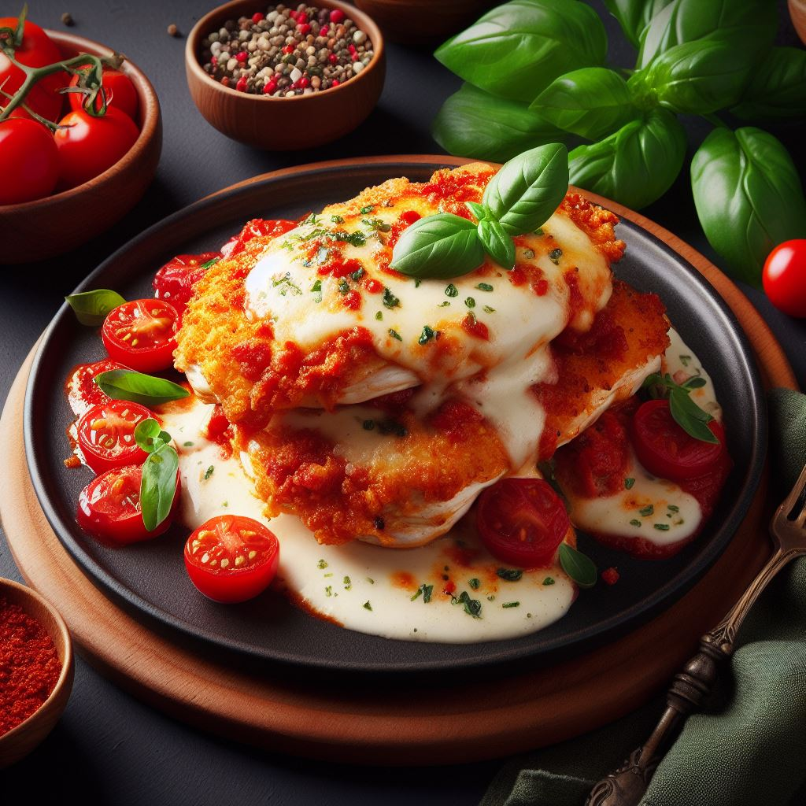

Chicken Parmesan

Description
Chicken Parmesan is a classic Italian-American dish made with breaded chicken cutlets, tomato sauce, and cheese. It is a hearty and comforting dish that is perfect for a weeknight meal or a special occasion.
Here is a more detailed description of the different elements of Chicken Parmesan:
- Chicken Cutlets: Chicken cutlets are used as the base of the dish. They are breaded and fried until golden brown.
- Tomato Sauce: The tomato sauce for Chicken Parmesan is typically a simple marinara sauce made with tomatoes, garlic, and herbs.
- Cheese: Chicken Parmesan is typically topped with mozzarella and Parmesan cheese. The cheese is melted under the broiler until bubbly and golden.
Ingredients
- 4 chicken cutlets
- 1 cup bread crumbs
- 1/2 cup grated Parmesan cheese
- 1 cup all-purpose flour
- 2 large eggs
- 2 cups marinara sauce
- 1 cup shredded mozzarella cheese
- Salt and pepper to taste
- Olive oil for frying
Steps
- Step 1: Preheat your oven to 400 degrees F (200 degrees C). Line a baking sheet with aluminum foil and set aside.
- Step 2: Season the chicken cutlets with salt and pepper. Dredge each cutlet in flour, then dip in beaten eggs, and coat in bread crumbs mixed with grated Parmesan.
- Step 3: Heat olive oil in a large skillet over medium heat. Add the chicken cutlets and cook until golden brown on both sides. Transfer the cutlets to the prepared baking sheet.
- Step 4: Top each cutlet with marinara sauce and shredded mozzarella cheese. Bake in the preheated oven until the cheese is melted and bubbly, about 15 minutes.
- Step 5: Serve the Chicken Parmesan hot with a side of spaghetti or a green salad.